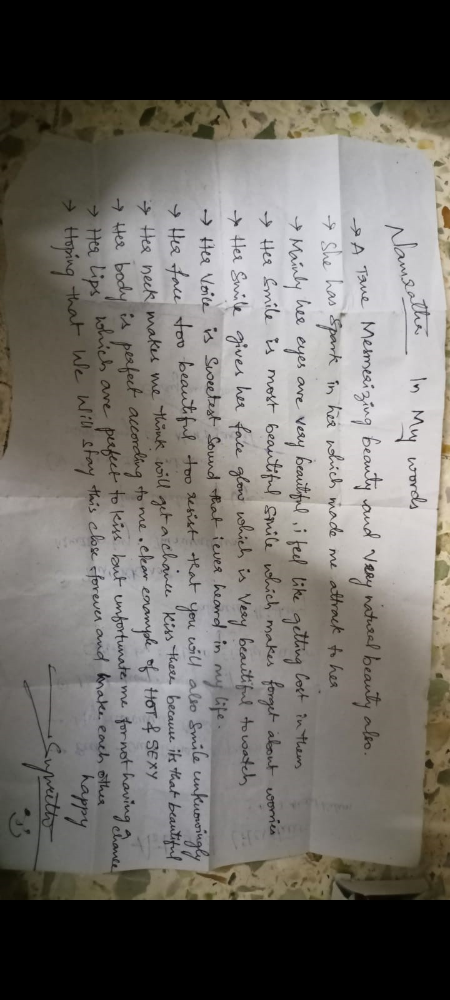

I Love u Maa

- These are the real feelings of mine where i can't ignore them even if i want!!
- I love everything about u
- If it is u i can do anything
- I always try to postpone things in my matters but when it comes to u i want to be first to do it
- I always think how to make u happy
- But then i remember the quote "To make the Bond STRONG bad days are also required"
- no matter how much i want u to be happy there will be days that u will be sad because of me but remember that those days u will get upset or get angry but for me it is like death because i never want to u be sad because of me for any reason it might be!
- I still remember the day u did fasting for me from that i wanted to do something for u
- Now for past 3 months i am doing SATURDAYS for u - NO Non-veg, Headbath, etc
- on every Saturday i will pray to god that "i want her to be happy even if she is not with me", "Give all her sadness to me"
- UR KISS is drug that takes me to heaven and makes me happiest person in the World
- I have never put this much Effort for anyone to be with me but for u i am willing to everything!
- THANK YOU MAA for coming in to my life and making it beautiful
- I will be happy to the last if u r in my life even as a friend (recommended) or sister (not recommended)
- In my Life U R MOST PRECIOUS TO ME
- I don't know whether u will remember me r not but i can never forget u i have never LOVED anyone this way and as beautiful as u
- No one has ever called me NANNA i love when u call me that u have forgotten these days
- I only call u MAA apart from my mother. U and My Mother have the power to make smile even if im sad!
- SORRY MAA for all the Sad i have given
- BE HAPPY, BE STRONG if u r sad i'm just one message away!
- Only for U and ur KISS i can and will do everything!!!!
- I LOVE U NAMRATHA MARKALA (MAA) 😘